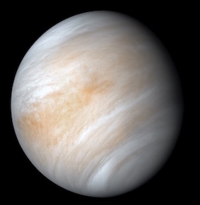

Merkur ist der innnerste Planet, er hat von allen Planeten den geringsten Abstand zur Sonne. Er kommt unserem Stern bis auf 46 Mio Kilometer nahe. Darum ist es auf seiner Oberfläche sehr heiß, bis zu 427° C. ... Merkur ist nur ein wenig größer als der Mond und sieht genauso zerlöchert aus.
Abstand zur Sonne: 46 bis 70 Mio km
Temperatur: -173 bis 427°C
Position / Art: 1 / Gesteinsplanet

Die Venus ist mit einer durchschnittlichen Sonnenentfernung von
108 Millionen Kilometern der zweitinnerste und mit einem Durchmesser
von ca. 12.100 Kilometern der drittkleinste Planet des Sonnensystems.
Sie zählt zu den vier erdähnlichen Planeten, die auch terrestrische
oder Gesteinsplaneten genannt werden.
Der Planet hat einen Durchmesser von über 12 742 km und einen Umfang von 40 075 km.
Die Erde hat genau einen Mond. In 365 Tagen umkreist die Erde die Sonne. Für eine
Umdrehung um die eigene Achse benötigt die Erde 23 Stunden und 56 Minuten.

Der Mars ist, von der Sonne aus gezählt, der vierte Planet im Sonnensystem und der
äußere Nachbar der Erde. Er zählt zu den erdähnlichen (terrestrischen) Planeten.
Sein Durchmesser ist mit knapp 6800 Kilometern etwa halb so groß wie der der Erde,
sein Volumen beträgt gut ein Siebtel des Erdvolumens